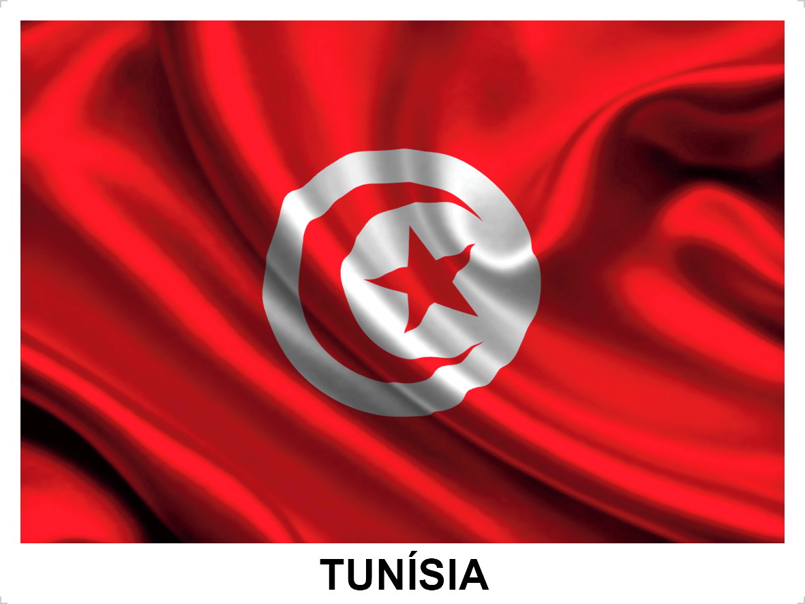

Grupo D
FRANÇA
Tudo sobre a Seleção Francesa em Copas do Mundo
A seleção francesa participou de sua 15º edição da Copa do Mundo de futebol em 2018. A seleção de futebol
masculino da França é conhecida como Les Bleus (Os Azuis) ou L'Equipe tricolore (A equipe tricolor). A seleção
francesa foi campeã do mundo em 1998 e em 2018;
vice-campeã em 2006; e terceiro lugar em 1958 e 1986.O jogador Antoine Griezmann adentrou o top-4 de
maiores
goleadores de todos os tempos da Seleção da França.
| Nome dos técnicos da Seleção Francesa em Copas do Mundo |
| Ano |
Nome |
| 2010 |
Raymond Domenech |
| 2014 |
Didier Deschamps |
| 2018 |
Didier Deschamps |
| 2022 |
Didier Deschamps |
| França na copa do mundo de 2022 |
| Data/horas |
Adversário |
Estádio |
| (22/11) ás 16hrs |
França x Peru ou Austrália ou Emirados Árabes |
Al Janoub |
| (26/11) ás 13hrs |
França x Dinamarca |
974 (Porto de Doha) |
| (30/11)ás 12hrs |
França x Tunísia |
Education City |
DINAMARCA
Tudo sobre a Seleção da Dinamarca em Copas do Mundo
A Seleção dinamarquesa participou de sua quinta edição da Copa do Mundo de futebol em 2018. A seleção
dinamarquesa de 1986 ficou conhecida como "Dinamáquina" devido às boas apresentações, principalmente a goleada
de 6 a 1 no Uruguai na primeira fase.
A Dinamarca ficou em primeiro do grupo vencendo seus três jogos num grupo difícil (Escócia, Uruguai e Alemanha
Ocidental). Entretanto, a mesma equipe que surpreendeu o mundo foi goleada por 5 a 1 pela Espanha nas
oitavas-de-final. O melhor resultado dos dinamarqueses em Copas do Mundo foi o 8º lugar na Copa do Mundo de
1998, quando a seleção da Dinamarca chegou às quartas-de-final. Dentre os destaques são: Christian
Eriksen,
Michael Laudrup, Jon Dahl Tomasson.
| Nome dos técnicos da Seleção da Dinamarca em Copas do Mundo |
| Ano |
Nome |
| 2010 |
Morten Olsen |
| 2014 |
Não se classificou |
| 2018 |
Kasper Hjulmand |
| 2022 |
Kasper Hjulmand |
| Dinamarca na copa do mundo de 2022 |
| Data/horas |
Adversário |
Estadio |
| (22/11) ás 10hrs |
Dinamarca x Tunísia |
Education City |
| (26/11) ás 13hrs |
Dinamarca x França |
974 (Porto de Doha) |
| (30/11)ás 12hrs |
Dinamarca x Peru ou Austrália ou Emirados Árabes |
Al Janoub (Al Wakrah) |
TUNÍSIA

Tudo sobre a Seleção DA Tunísia em Copas do Mundo
A seleção da Tunísia participou de sua quinta edição da Copa do Mundo de futebol em 2018. A Tunísia também
esteve presente nos mundiais de 1978, 1998, 2002 e 2006. Em todas as suas participações os tunisianos não
passaram da primeira fase.
Na Copa do Mundo de 1978 a Tunísia fez história mesmo não passando da primeira fase.
Dois dos maiores artilheiros da seleção é Wahbi Khazri e Youssef Msakni.
| Nome dos técnicos da Seleção da Tunísia em Copas do Mundo |
| Ano |
Nome |
| 2010 |
Não se classificou |
| 2014 |
Não se classificou |
| 2018 |
Mondher Kebaier |
| 2022 |
Ammar Souayah |
| Tunisía na copa do mundo de 2022 |
| Data/horas |
Adversário |
Estadio |
| (22/11) ás 10hrs |
Tunísia x Dinamarca |
Education City |
| (26/11) ás 07hrs |
Tunísia x Peru ou Austrália ou Emirados Árabes |
Al Janoub |
| (30/11)ás 12hrs |
Tunísia x França |
Education City |
REPESCAGEM DA FASE DE GRUPOS

O que é a repescagem e como funciona?
Repescagem é o termo utilizado para as seleções que não se classificaram diretamente para a Copa, podemos
comparar as partidas de repescagem como as da pré libertadores em nosso continente,
são seleções que disputarão o direito de entrar na fase de grupos da Copa.
Apesar de ainda não estarem na fase de grupos, as seleções poderão conhecer os seus possíveis adversários, caso
vençam as suas chaves, isso porque as partidas ocorrerão depois do sorteio que definirá os grupos. Todos os
participantes da repescagem estão no pote 4 do sorteio.
Paises da Repescagem do grupo D
Os paises que estão concorendo a unica vaga do grupo são os paises Peru,Emirados Árabes e Austrália.Os sorteios
para decidir quais seriam os caminhos dos paises classificados para a repescagem, foram definidos por sorteio,
no dia 26 de novembro de 2021, na sede da FIFA, em Zurique. Será a primeira vez que as partidas serão realizadas
em jogo único e com campo neutro. As seleções europeias jogam entre contra adversários do próprio continente.
| Grupo D na copa do mundo de 2022 |
| Data/horas |
Adversário |
Estadio |
| (22/11) ás 16hrs |
França x Peru ou Austrália ou Emirados Árabes |
Al Janoub |
| (26/11) ás 07hrs |
Tunísia x Peru ou Austrália ou Emirados Árabes |
Al Janoub |
| (30/11)ás 12hrs |
Dinamarca x Peru ou Austrália ou Emirados Árabes |
Al Janoub (Al Wakrah) |